Abbildung ähnlich – zeigt den Produkttyp.
Solarpanel 6-10 W für 4G-/Akku-Überwachungskameras (IP65, mit Montagehalter)
Monokristallines Kleinpanel mit Montagehalter und Schutzart IP65 zur Dauerversorgung von Akku- und 4G-Überwachungskameras auf der Baustelle.
Das Zusatz-Solarpanel hält Akku- und 4G-Kameras auf der Baustelle dauerhaft einsatzbereit, wo kein Baustrom anliegt, und ersetzt den manuellen Akkuwechsel. Professionelle Käufer erwarten monokristalline Zellen mit realer Leistung unter Last, ein wetterfestes Gehäuse (IP65) mit UV-stabilem Laminat, ein ausreichend langes Anschlusskabel, einen schwenkbaren Wandhalter und die zum Kameramodell passende Steckerform (USB-C, Micro-USB, DC 5521). Rechtlich gelten Photovoltaik-Module als Elektro(nik)geräte (ElektroG/WEEE) mit Registrierung bei stiftung ear; hinzu kommen RoHS, REACH und die GPSR.
Technische Daten
| Nennleistung | 6-10 W Varianten auf Anfrage |
|---|---|
| Zelltyp | monokristallines Silizium, 10 Zellen, Wirkungsgrad 22 % |
| Abmessungen / Gewicht | 190 × 162 mm, 278 g |
| Schutzart / Material | IP65; ABS-Rahmen, PET/ETFE-Rückseite |
| Anschluss | USB, USB-C oder DC 5521 wählbar |
| Zolltarifnummer (HS) | 85414300 |
EU-Normen und Vorschriften
IEC 61215 / IEC 61730Photovoltaik-Module: Bauartzulassung und Sicherheit, soweit für Kleinpanels anwendbarIEC 60529 (IP65)Schutzarten durch Gehäuse: Staubdichtheit und Schutz gegen StrahlwasserWEEE 2012/19/EU / ElektroGPhotovoltaik-Module sind erfasst: Registrierung des Inverkehrbringers bei stiftung ear, RücknahmepflichtRoHS 2011/65/EUBeschränkung gefährlicher Stoffe, KonformitätserklärungREACH (EG) 1907/2006Chemikalienrecht, SVHC-Informationspflicht für Kunststoffe, Kleber und Laminate(EU) 2023/988Allgemeine Produktsicherheitsverordnung (GPSR): EU-Verantwortlicher, Rückverfolgbarkeit, Online-Pflichtangaben
Passt dazu

Weitere Produkte dieser Kategorie

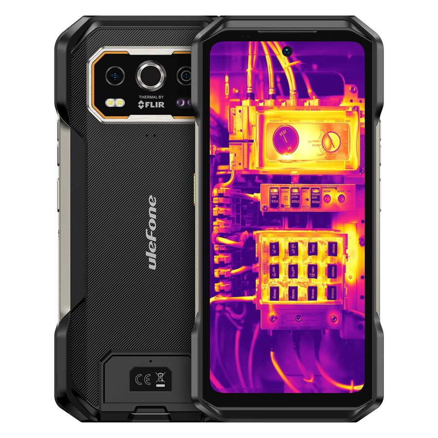


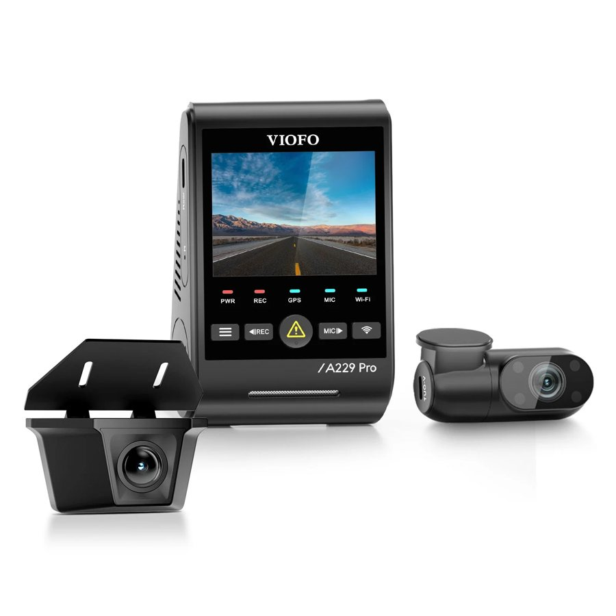
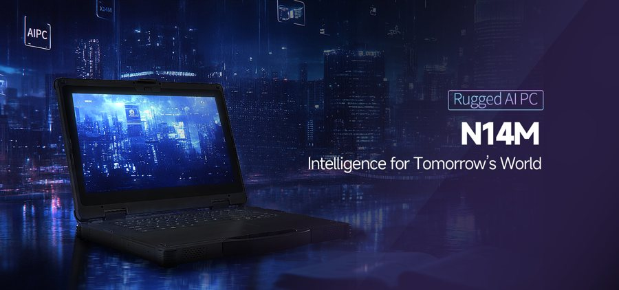
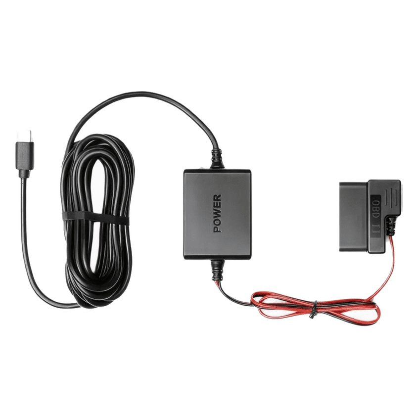
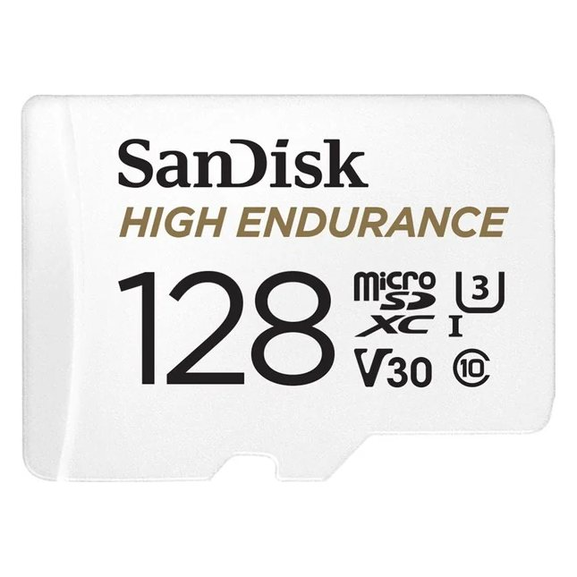
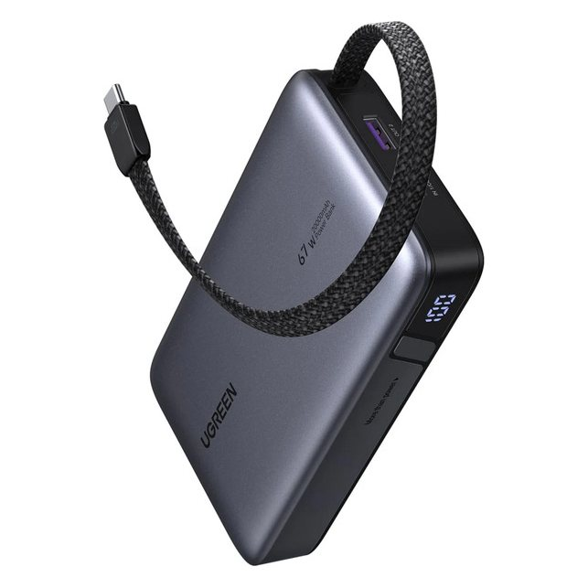

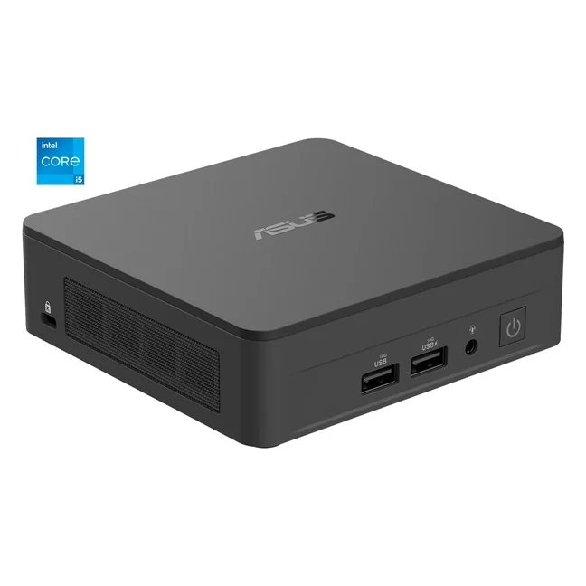
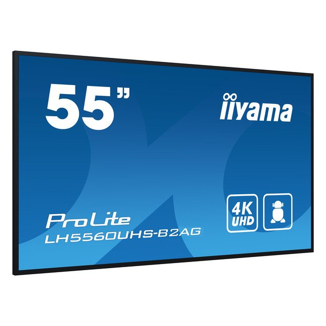
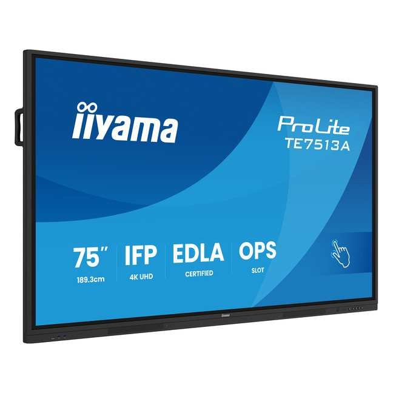

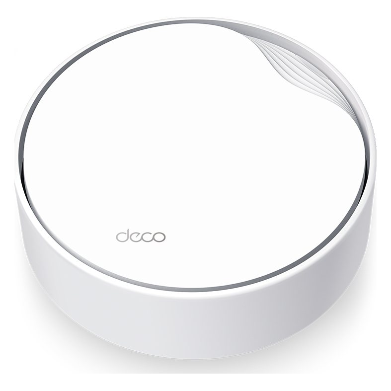

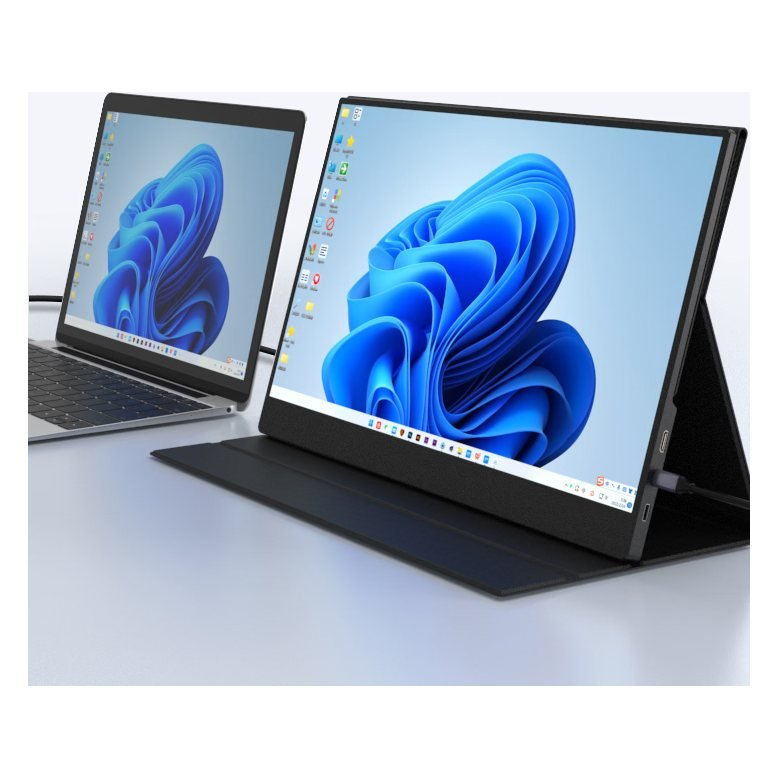
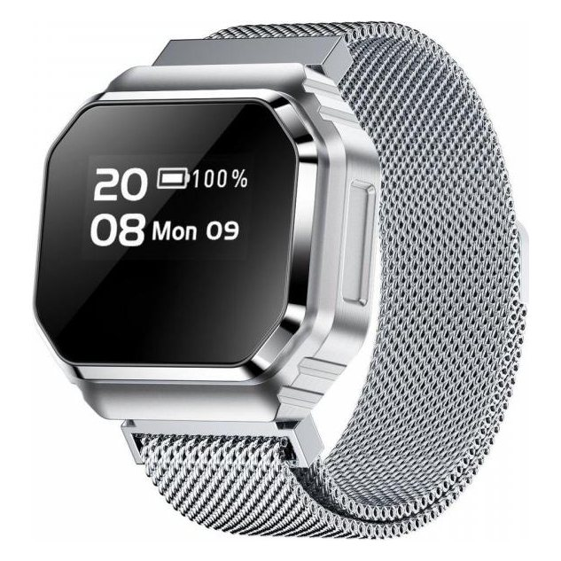


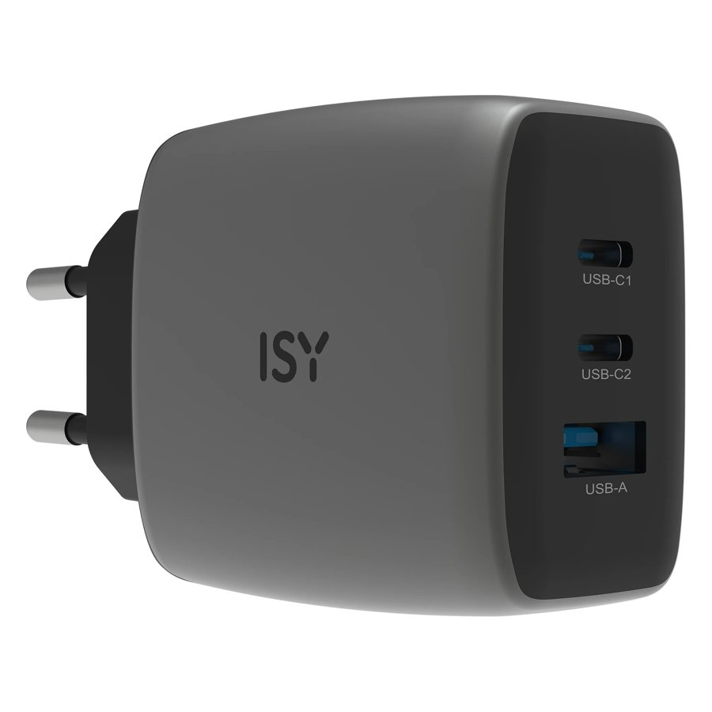